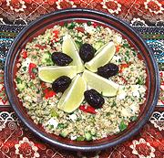

|
Bulgur & Vegetable SaladAlgeria - Salata Borghol | ||||
| Makes: Effort: Sched: DoAhead: |
3-1/4 # ** 2 hrs Best |
This flavorful salad is substantial enough to serve as a light lunch. This is an excellent buffet salad, as it will not wilt. Bulgur wheat is used throughout the Maghreb. See also Comments. | |||
|
|
1-1/2 2 ------- 8 6 4 2 ------- 2 2 3 ------- 3 4 1/2 1/3 ------- 6 ------- |
c c ----- oz oz lrg cl ----- T T T ----- T T t t ----- oz ----- |
Bulgur, fine (1) Water, boiling -- Vegetables Bell Pepper, red (2) Cucumber (3) Scallions Garlic -- Herbs Parsley, flat (4) Mint, fresh Cilantro -- Dressing Lemon Juice Olive Oil, ExtV Salt (5) Pepper, black. -------------- Cheese (6) -- Garnish Olives, Black (7) Lime Wedges |
Make (1 hour + chill time 1+ hr)
|